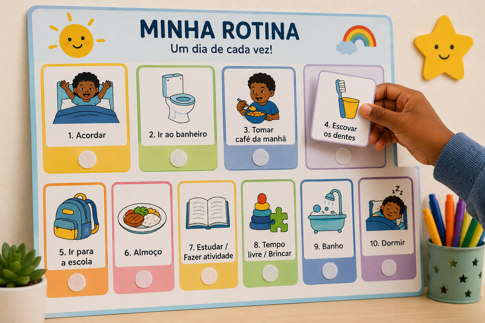
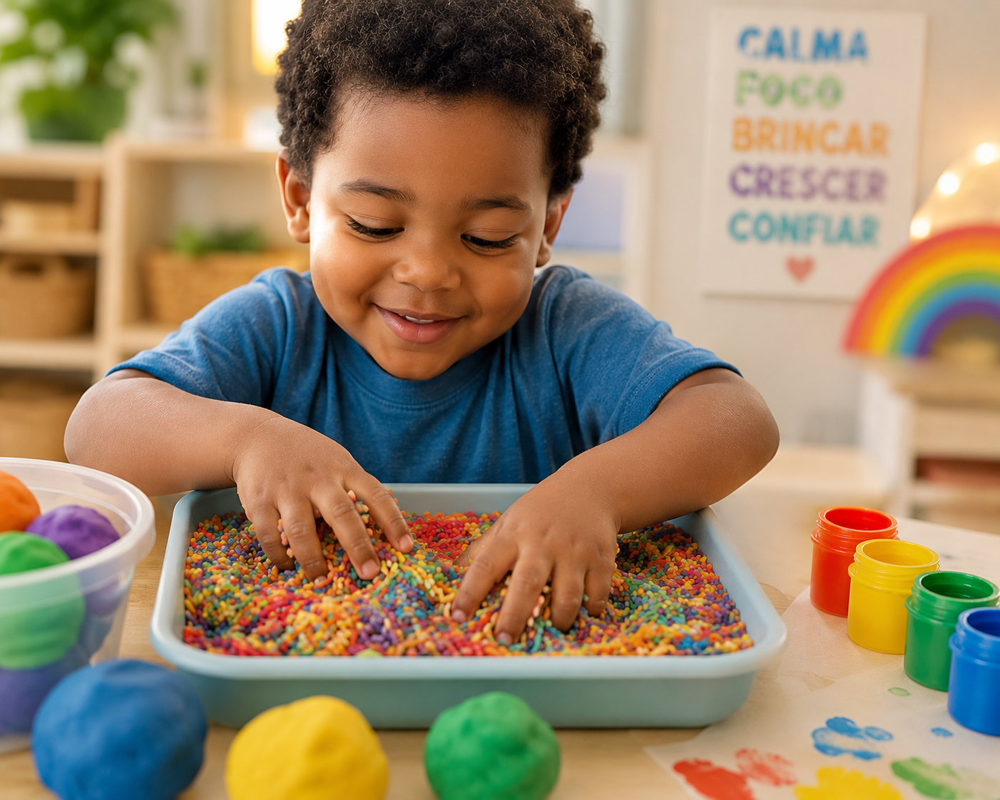
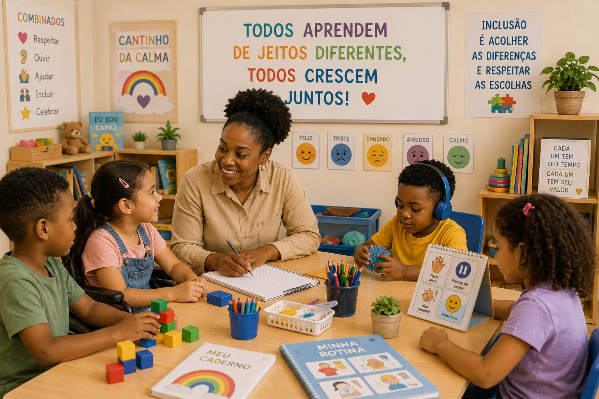

ROTINAS
Como construir uma rotina visual em casa
Um guia passo a passo para criar quadros de rotina simples e eficazes.
Uma plataforma completa de apoio, informação e comunidade para famílias, educadores e especialistas.
Descreva a situação com as suas palavras. O assistente do EntreMundos organiza os resultados por tipo: artigos, especialistas, exercícios ou histórias de outras famílias.
Artigos, guias e materiais imprimíveis revistos por profissionais, organizados por idade e etapa de desenvolvimento.
Explorar biblioteca →Terapeutas, psicólogos e educadores verificados. Marque uma primeira conversa sem compromisso.
Ver especialistas →Tire dúvidas do dia a dia e receba sugestões práticas, adaptadas ao perfil da sua criança.
Falar com o assistente →Um espaço moderado para partilhar experiências, celebrar conquistas e pedir conselhos.
Conhecer a comunidade →Idade, interesses e desafios atuais — leva menos de três minutos.
Recursos e recomendações organizados de acordo com o perfil criado.
Marque conversas com profissionais que correspondem às necessidades identificadas.
Registe conquistas e ajuste o plano à medida que a criança evolui.

Um guia passo a passo para criar quadros de rotina simples e eficazes.

Atividades de baixo custo para regular estímulos em dias mais difíceis.

Perguntas certas e materiais para partilhar com professores e apoios educativos.
Estamos a ligar os primeiros especialistas à plataforma. Se é um profissional da área, junte-se a nós!
Criamos um ambiente seguro para que pais e cuidadores não precisem de passar por essa jornada sem orientação e informação de qualidade.
— Missão EntreMundosA biblioteca e o assistente foram desenhados para ajudar na organização de rotinas e na preparação para reuniões com a escola.
— Recursos IniciaisEstamos a construir uma rede com profissionais qualificados para que o atendimento especializado esteja cada vez mais próximo.
— Em ExpansãoCriar uma conta é gratuito e leva menos de três minutos.
Criar conta gratuita